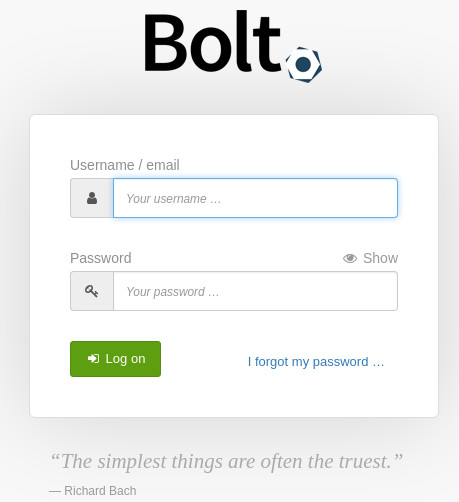
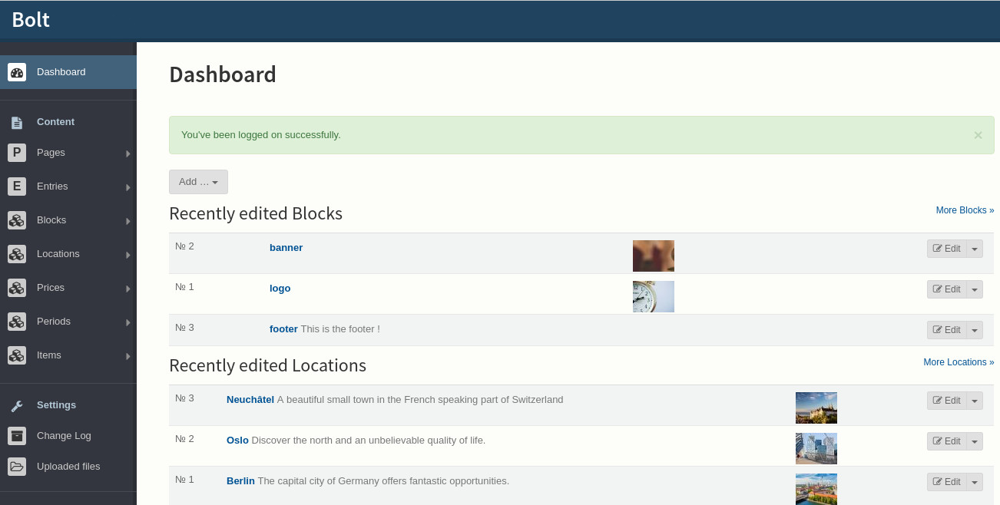

Edit the website¶
Your affiliate website is served by Bolt CMS which comes with an administration area that allows you to edit your website online in your browser.
Connect to the dashboard¶
First of all, connect to the administration area the address is http://your-domain-name/bolt
 After the login, you should arrive on your dashboard similar to the picture above.
Structure of the website¶
On the left of the dashboard you see the menu with a section called “Content” with some of the following elements :
Elements provided by Bolt CMS :
- Pages, allows you to manage unique pages on the webpage like “About” or “Contact us”
- Entries, could be used to create a blog
- Blocks, are used to set specific elements on the page, like a logo, or a banner
Elements provided by the template :
- Locations, if your products are related to specific areas you can organize them by locations
- Prices, if you want to set price ranges to arrange your products with their price
- Periods, if your products are available only in a period of time you can specify them there
- Items, all your products and services will be added here
Locations, prices and periods are ways to categorize your products or services. Every item which is a product or a service can belong to zero or more categories even of the same kind. A bottle of Wine can be available in France, Germany and Switzerland . A coat can be bought in Norway or Sweden during winter, etc.
Read Website architecture. To learn more about the categories and content types.